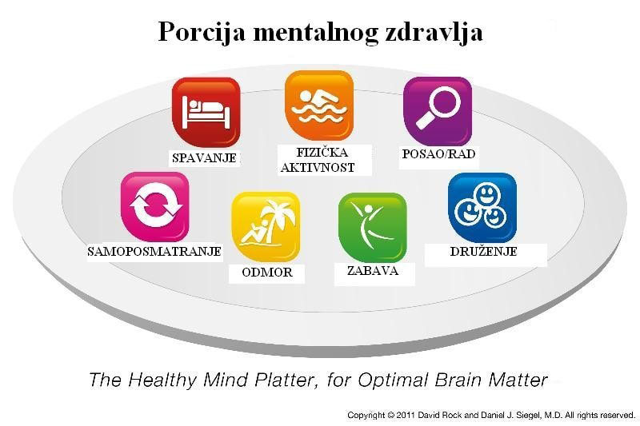

Mentalno zdravlje
Svi su čuli za čuvenu piramidu ili tanjir pravilne ishrane – grafički prikaz smernica kako treba da se hranimo da bismo bili fizički zdravi. Šta bi bio pandan ovim preporukama za optimalno funkcionisanje našeg mozga?
Porcija mentalnog zdravlja (Healthy Mind Platter), čiji su autori Dr. David Rock i Dr. Dan Siegel, obuhvata sedam mentalnih aktivnosti ključnih za pravilno psihičko funkcionisanje. Svakodnevno angažovanje u ovim aktivnostima učvršćuje veze između različitih delova mozga, kao i relacije sa drugim ljudima i svetom oko nas. Integracija, odnosno povezanost između različitih delova sistema (na primer gornjeg i donjeg dela tela, ili povezanost sa porodicom i širom zajednicom) od suštinskog je značaja za mentalno zdravlje. Integracija se postiže usvajanjem sedam „mentalnih navika“ i izgradnjom životnog stila koji počiva na svakodnevnom upražnjavanju ovih jednostavnih, a korisnih aktivnosti.
Ne postoji recept koliko bi vremena na nivou dana trebalo da posvetimo svakoj od pomenutih aktivnosti. Svako je individua za sebe i naše potrebe se menjaju vremenom. Važno je da ih imamo sve u vidu i da ni jedna ne bude zapostavljena u dužem periodu. Kao što nije zdravo da danima ili nedeljama jedemo samo picu, tako nije dobro ni da samo radimo, a nedovoljno spavamo, ili stalno odmaramo, a da nikada nismo produktivni. Ključ je u pronalaženju balansa i prebacivanju fokusa sa jedne na drugu aktivnost kako bi se mozak razvijao na sve moguće i potrebne načine.
Prevod i adaptacija:
Svetlana Slepčev
Reference